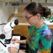

Texas A&M Program for Integrated Undergraduate Research Experiences in Biological and Mathematical Sciences

We cordially invite biology majors with a strong interest in mathematics to participate in the Undergraduate Program in Biological and Mathematical Sciences (UBM), a collaboration between the departments of Biology, Mathematics and Statistics with broad participation among faculty in several Colleges across campus. The goal of this program, funded by the National Science Foundation, is to train students in quantitative approaches, including mathematical, statistical, and computational techniques, to fundamental problems in the life sciences. The importance of quantitative biology was summarized in a recommendation from the National Academies (advisors to the nation on science, engineering and medicine) in their 2003 report, BIO2010: Transforming Undergraduate Education for Future Research Biologists:
Given the profound changes in the nature of biology and how biological research is performed and communicated, each institution of higher education should reexamine its current courses and teaching approaches (as described in this report) to see if they meet the needs of today’s undergraduate biology students. Those selecting the new approaches should consider the importance of building a strong foundation in mathematics, physical, and information sciences to prepare students for research that is increasingly interdisciplinary in character.
Students interested in participating in the UBM program should begin by registering for the one-credit course BIOL 285, Quantitative Biology Symposium in their first semester. Each week, a different professor will discuss his or her work at the interface of math and biology. Topics may include everything from human medicine and genetics to ecology and evolution. This informal seminar (complete with pizza and soft drinks) is an excellent introduction to the professors and other students in the UBM program.
After their first year, students may join a participating laboratory to work on a research project. Most of the funding for the UBM program is to pay undergraduate students for their work during the academic year and during the summer. In the second and subsequent years, UBM students will have the opportunity to take new courses developed specifically for this program. Upon graduation UBM students will be exceptionally well prepared for interesting and rewarding jobs in industry or for continuing their research careers in top graduate schools.
Student Testimonials:
"New fields are generated when you combine topics together, and thus new ground to explore. I am an explorer and a creator at heart, and I have found the combination of biology, with computer science, industrial engineering, and math, thrilling. By being part of the biology / math interdisciplinary science (UBM) program, my horizons were expanded and my eyes were opened. If you are remotely interested in math and science, in research, or get a thrill from exploring new topics, this program is well worth it." -Adam |
 "Each person has a unique set of knowledge and experiences, reflected metaphorically in a sort of intellectual sphere within which they are able to think about the world. The UBM program helps students to expand the dimensions of this sphere by bridging two scientific disciplines. As a UBM participant, I overcame my dread of mathematics and learned how to apply circular statistics and time series analyses to my data. In the field of biological clocks, such techniques are indispensable to the quantification and analysis of rhythms. Not only did I gain practical knowledge that I use every day in my research, but I also gained a new appreciation for and understanding of mathematics. I realized that math is an integral component of biology and that the ability to apply it properly is fundamental to success in biological research." -Ashli |